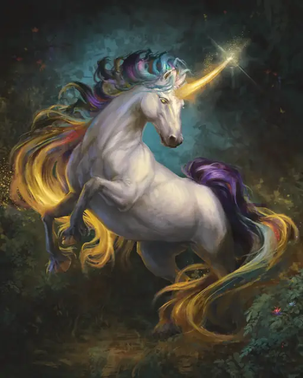

Единорог
Unicorn
Большой Небожитель, Принципиальный Добрый

Класс Защиты 12 Инициатива +8 (18)
Хиты 97 (13к10 + 26)
Скорость 50 футов
| мод | спас | ||
|---|---|---|---|
| СИЛ | 18 | +4 | +4 |
| ЛОВ | 14 | +2 | +2 |
| ТЕЛ | 15 | +2 | +2 |
| мод | спас | ||
|---|---|---|---|
| ИНТ | 11 | +0 | +0 |
| МДР | 17 | +3 | +3 |
| ХАР | 16 | +3 | +3 |
Иммунитеты Яд; Отравленный, Очарованный, Парализованный
Чувства Тёмное зрение 60 футов, пассивное Восприятие 13
Языки Небесный, Сильван, Эльфийский, Телепатия 120 фт.
Опасность 5 (1 800 опыта; БВ +3)
Особенности
Легендарное сопротивление (3/день). Если единорог проваливает спасбросок, он может вместо этого сделать его успешным.
Сопротивление магии. Единорог совершает с Преимуществом спасброски от заклинаний и прочих магических эффектов.
Действия
Мультиатака. Единорог совершает одну атаку Копытами и одну атаку Сияющим рогом.
Копыта. Бросок рукопашной атаки: +7, досягаемость 5 фт. Попадание: 11 (2к6 + 4) Дробящего урона.
Сияющий рог. Бросок рукопашной атаки: +7, досягаемость 5 фт. Попадание: 9 (1к10 + 4) урона Излучением.
Сотворение заклинаний. Единорог сотворяет одно из следующих заклинаний (заклинательная характеристика — Харизма, Сл спасброска заклинаний 14):
Неограниченно: Искусство друидов, Обнаружение зла и добра
1/день каждое: Бесследное передвижение, Опутывание, Рассеивание зла и добра, Слово возврата, Умиротворение
Бонусные действия
Благословение единорога (3/день). Единорог касается другого существа своим рогом и сотворяет на него заклинание Лечение ран или Малое восстановление (заклинательная характеристика — та же, что для Сотворения заклинаний).
Легендарные действия
У этого существа есть 3 использования Легендарных действий; оно может немедленно после окончания хода другого существа потратить одно использование, чтобы совершить одно из следующих действий. Существо восполняет все потраченные использования в начале каждого своего хода.
Налёт рогом. Единорог перемещается на расстояние вплоть до половины своей Скорости, не Провоцируя атак, и совершает одну атаку Сияющим рогом.
Мерцающий щит. Единорог выбирает целью себя или одно существо, которое видит в пределах 60 футов отсебя. Цель получает 10 (3к6) Временных Хитов и +2 к КЗ до конца следующего хода единорога. Единорог не может совершить это действие повторно до начала своего следующего хода.
Бонус мастерства +3
Среда обитания Леса, Страна фей
Сокровища Любые
Единорог
Величественный и волшебный владыка лесов
Единороги — величественные защитники лесов.
Они пользуются почтением большинства Фей и других лесных обитателей и делают всё возможное, чтобы обеспечить мир и процветание для всех получивших убежище в их лесных владениях.
Логова единорогов
Единороги обитают в нетронутых цивилизацией лесах, часто населённых доброжелательными Феями.
Местность, в которой находится логово единорога, изменяется из-за его присутствия, что создаёт следующие эффекты:
• Маскирующая листва. У единорога и его союзников Преимущество на проверки Ловкости (Скрытность) в пределах 1 мили от логова.
• Позитивная энергия. Если существо в пределах 1 мили от логова восстанавливает Хиты с помощью заклинания, оно восстанавливает максимум возможных Хитов. В дополнение к этому эффекты проклятий подавляются в пределах 1 мили от логова.
Если единорог умирает или перемещает своё логово в другое место, все эти эффекты мгновенно исчезают.